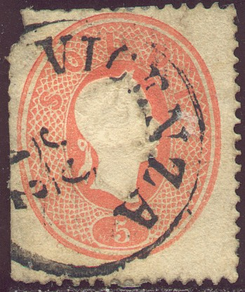
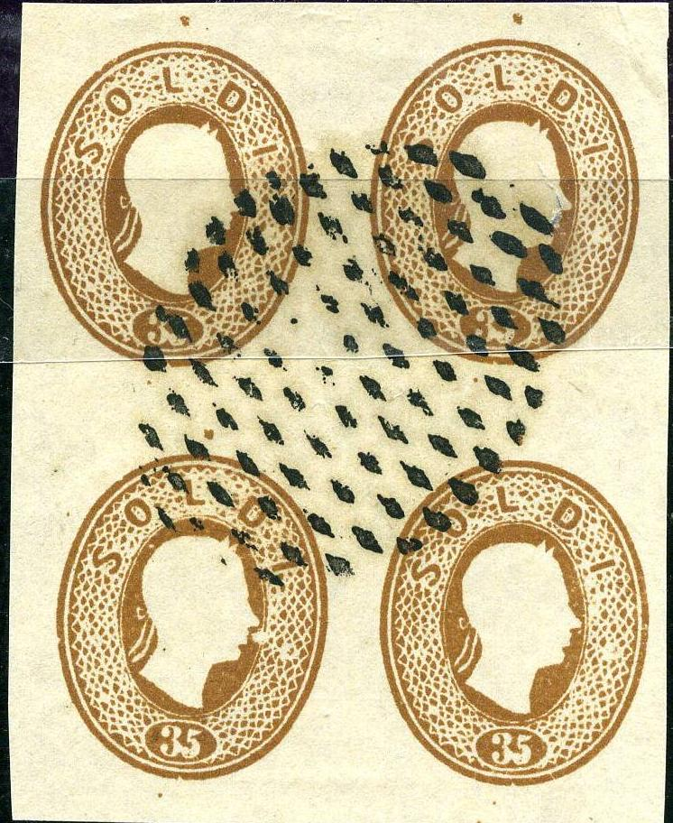
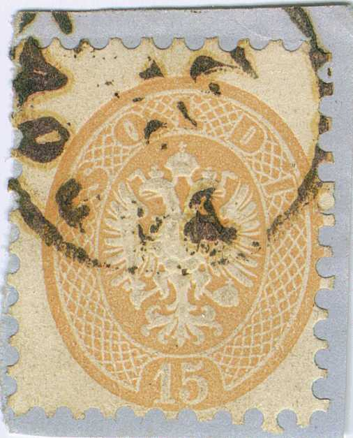
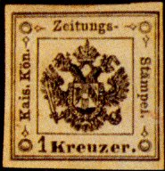
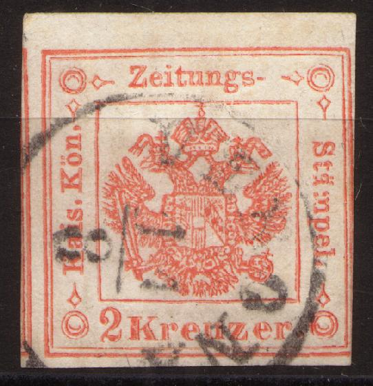
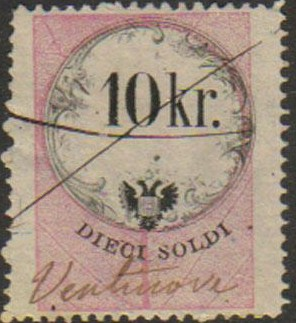

Return To Catalogue - Austrian Italy 1850 issue - Austrian Italy 1859 issue - Austrian Italy cancels - Austria - Italy
Note: on my website many of the
pictures can not be seen! They are of course present in the
catalogue;
contact me if you want to purchase the catalogue.
All stamps are like the Austrian types, but with inscription "CENTES" or "SOLDI" instead of "KREUZER"
5 s red 10 s brown
Envelopes in the same design exist in the following values: 3 s green, 5 s red, 10 s brown, 15 s blue, 20 s yellow, 25 s brown, 30 s violet and 35 s brown. Reprints have been made of all these values in 1865 (all values), 1871 (all values), 1885 (all values) and 1889 (3 s only). They are worth much less than the genuine envelopes. An erroneous reprint 3 Soldi yellow (wrong colour) exists.
Value of the stamps |
|||
vc = very common c = common * = not so common ** = uncommon |
*** = very uncommon R = rare RR = very rare RRR = extremely rare |
||
| Value | Unused | Used | Remarks |
| 5 s | RRR | * | |
| 10 s | RRR | *** | |
Reprints of these stamps exist (even in non-issued values of 2 s, 3 s and 15 s) in wrong perforation (the genuine perforation is 14). They were made in 1865, 1871, 1885 and 1889 (most common). Examples of such reprints:


Reprints
I've also seen a block of four 2 s yellow imperforate reprints.
I have seen forgeries (made by Spiro?) in the values 3 s green, 5 s red, 10 s brown, 20 s brown, 25 s brown, 30 s brown and 35 s brown (all different shades of brown). I have also seen the 25 s brown value in a whole sheet of 25 (5x5). Also, there is no embossing of the head. They are perforated or imperforate and usually cancelled on the sheet with a square of dots. However, the next Spiro(?) forgeries are cancelled with a different kind of cancel:



(forgeries, the hair on the forehead is pointing towards the
"D" instead the space between the "L" and
"D" of the word "SOLDI", they have a "ZEITUNGS EXPEDITION" cancel or other
bogus cancels)
Similar forgeries were also made of the corresponding 'Kreuzer' stamps of Austria (also presumably by Spiro).
Some imperforate forgeries, pasted on old (genuine) documents:
A forgery of the 15 p imperforate forgery (pretending to be a cut
of an envelope?) together with a 3 s of the 1859 issue. I've only
seen these forgeries with pencancels
For more of these Italy States and Austrian forgeries on old documents, made by the same forger, click here.



(Wide perforation)


(Narrow perforation)
2 s yellow 3 s green 5 s red 10 s blue 15 s brown
For the specialist: two types of perforations have been issued, a very fine perforation (14) in 1863 and a very wide perforation (9 1/2) in 1864-65.
Value of the stamps |
|||
vc = very common c = common * = not so common ** = uncommon |
*** = very uncommon R = rare RR = very rare RRR = extremely rare |
||
| Value | Unused | Used | Remarks |
| Perforated 14 | |||
| 2 s | R | R | |
| 3 s | RR | R | |
| 5 s | RR | * | |
| 10 s | RRR | *** | |
| 15 s | RRR | RR | |
Perforated 9 1/2 |
|||
| 2 s | R | RR | |
| 3 s | *** | *** | |
| 5 s | * | * | |
| 10 s | * | * | |
| 15 s | *** | *** | |
These stamps have been reprinted in 1885 with perforation 13. Envelopes in the same design exist in the following values: 3 s green, 5 s red, 10 s blue, 15 s brown and 25 s violet. Examples of such reprints:

These stamps could also be used in the Levant (Turkey and area), examples:


(stamps used in Alexandria and Janina)



1 k black 2 k red 4 k red
The most common of these tax stamps is the 2 k, the other two are very rare. These stamps are of the same type of those of Austria. They have been reprinted in 1873 (all three values, some in slightly different types). For more information concerning these reprints see under: Austria newspaper tax stamps.
Value of the stamps |
|||
vc = very common c = common * = not so common ** = uncommon |
*** = very uncommon R = rare RR = very rare RRR = extremely rare |
||
| Value | Unused | Used | Remarks |
| 1 k | RRR | RRR | reprints: R |
| 2 k | RR | *** | |
| 4 k | RRR | RRR | reprints: R |
(I've been told that this is a reprint of the 1 k black stamp)
Forgeries, example:
The 1 and 4 k were offered by the forger Fournier in his 1914 pricelist as first choice forgeries for 2 Swiss Francs both. More information about these forgeries can be found in the Serrane guide.

The following values exist: 5 c green and orange, 10 c green and red, 15 c, 30 c, 50 c, 75 c, 1.50 L, 2.25 L, 3 L, 6 L, 9 L, 12 L, 15 L, 18 L, 24 L, 30 L, 36 L, 42 L, 48 L, 54 L and 60 L (all in green and black except for the 5 c and 10 c). In a similar design were issued: 3 c red, green and black, 5 c blue, green and black (for posters).
(Reduced sized image)
Fiscal stamps were sometimes used as postal stamps (rare to extremely rare, forbidden in 1857 by the postal authorities).
The values 1/2 k, 2 k, 4 k, 5 k, 6 k, 7 k, 10 k, 12 k, 15 k, 25 k, 30 k, 50 k, 60 k, 72 k, 75 k, 90 k, 1 Fl, 2 FL, 3 Fl, 5 Fl, 6 Fl, 8 Fl, 10 Fl, 12 Fl, 14 Fl, 16 Fl, 18 Fl and 20 Fl were issued (all in colours red and black). Two more values exist for posters: 1 k blue and black, 2 k blue and black. The corresponding stamps of Austria are in the colours green and black.

1/2 k, 2 k, 3 k, 4 k, 5 k, 7 k, 10 k, 12 k, 15 k, 25 k, 26 k, 50 k, 60 k, 75 k, 90 k (all in red and black).
Some rare other fiscal stamps exist for posters (Bollo per gli annunci, 4 values) and almanachs (Bollo per Gli Almanacchi2 values):


{kind=link}
{kind=link}
{kind=link}
{kind=link}